전산응용기계제도기능사 (2005-10-02 기출문제)
1과목: 기계재료 및 요소
1. 재료의 하중 변형 시험선도 중 항복점이 나타나는 것은?
- 구리
- 주철
- 특수강
- 연강
(정답률: 38%)

2. 다음 중 델타메탈(delta metal)의 성분이 올바른 것은?
- 6:4 황동에 철을 1~2% 첨가
- 7:3 황동에 주석을 3% 내외 첨가
- 6:4 황동에 망간을 1~2% 첨가
- 7:3 황동에 니켈을 3% 내외 첨가
(정답률: 56%)
3. 모듈 4, 잇수가 각각 75개, 150개인 1쌍의 스퍼 기어가맞 물려 있을 때, 두 기어의 축간 거리는 몇 ㎜ 인가?
- 420
- 430
- 440
- 450
(정답률: 75%)
4. 피치 3㎜인 3줄 나사의 리드는 ㎜인가?
- 1㎜
- 2.87㎜
- 3.14㎜
- 9㎜
(정답률: 85%)
5. 고강도 알루미늄합금강으로 항공기용 재료등에 사용되는 것은?
- 두랄루민
- 인바
- 콘스탄탄
- 서멧
(정답률: 75%)
6. 표준 성분이 4% Cu, 2% Ni, 1.5% Mg인 알루미늄 합금으로 시효 경화성이 있어서 모래형 및 금형 주물로 사용되고, 열간단조 및 압출가공이 쉬워 단조품 및 피스톤에 이용되는 금속은?
- Y합금
- 하이드로날륨
- 두랄루민
- 알클래드
(정답률: 56%)
7. 기본 설계 단계로부터 상세 설계 및 도면 작성에 이르는 설계 전체의 과정을 컴퓨터를 이용하여 설계하는 방식은?
- CAM(Computer Aided Manufacturing)
- CAD(Computer Aided Design)
- CAE(Computer Aided Engineering)
- CAT((Computer Aided Testing)
(정답률: 84%)
8. 전로에서 정련된 용강을 페로망간(Fe-Mn)으로 불완전 탈산시켜 주형에 주입한 것은?
- 탄소강
- 킬드강
- 림드강
- 세미킬드강
(정답률: 34%)
9. 냉각이 쉽고 큰 회전력의 제동이 가능한 브레이크는?
- 원판 브레이크
- 복식 블록 브레이크
- 벤드 브레이크
- 자동하중 브레이크
(정답률: 50%)
10. TTT곡선도에서 TTT가 의미하는 것이 아닌 것은?
- 시간(Time)
- 뜨임(Tempering)
- 온도(Temperature)
- 변태(Transformation)
(정답률: 57%)
2과목: 기계가공법 및 안전관리
11. 축을 모양에 의해 분류할 때, 여기에 해당되지 않는 것은?
- 크랭크축
- 직선축
- 플렉시불축
- 중간축
(정답률: 44%)
12. 표준화와 규격화를 하면 어떤 부분이 부족할 수 있는가?
- 부품의 호환성
- 자원의 절약
- 비정질 재료
- 초전도 재료
(정답률: 30%)
13. 스테인레스강과 인바(invar) 등을 조합시켜 가정용 전기기구 등의 온도 조절용 바이메탈(bimetal)에 사용되는 신소재는?
- 제진 재료
- 클래드 재료
- 비정질 재료
- 초전도 재료
(정답률: 23%)
14. 다음 중 철강재료에 관한 올바른 설명은?
- 탄소강은 탄소를 2.0%~4.3% 함유한다.
- 용광로에서 생산된 철은 강이라 하고 불순물과 탄소가 적다.
- 탄소강의 기계적 성질에 가장 큰 영향을 끼치는 것은 규소(Si)의 함유량이다.
- 합금강은 탄소강이 지니지 못한 특수한 성질을 부여하기 위하여 합금원소를 첨가하여 만든 것이다.
(정답률: 49%)
15. 벨트에 장력을 가하는 방법이 아닌 것은?
- 자중에 의한 방법
- 탄성 변형에 의한 방법
- 스냅 풀리를 사용하는 방법
- 벨트를 엇걸기 한다.
(정답률: 47%)
16. 나사 마이크로미터는 다음의 어느 측정에 가장 널리 사용되는가?
- 나사의 골지름
- 나사의 유효지름
- 나사의 호칭지름
- 나사의 바깥지름
(정답률: 30%)
17. 선반에서 기본 작업의 종류에 해당되지 않는 것은?
- 내경 홈파기
- 보링
- 절단
- 기어 가공
(정답률: 52%)
18. 절삭유의 사용 목적이 아닌 것은?
- 바이트 및 공작물의 냉각
- 절삭 공구의 수명 연장
- 절삭 저항의 증대
- 가공 표면의 방청
(정답률: 72%)
19. 연삭숫돌 바퀴를 표시할 때 구성하는 요소에 해당되지 않는 것은?
- 결합제
- 입도
- 결합도
- 강도
(정답률: 55%)
20. 선반가공에서 지켜야 할 안전 및 유의 사항이다. 잘못된 것은?
- 척 핸들은 사용 후 척에서 빼 놓아야한다.
- 공작물을 척에 느슨하게 고정한다.
- 기계조작은 주축이 정지 상태에서 실시한다.
- 작업 중 장갑을 착용해서는 안 된다.
(정답률: 80%)
21. 공작기계의 기본 운동이 아닌 것은?
- 절삭운동
- 이송운동
- 위치조정운동
- 공작물 착탈운동
(정답률: 75%)
22. NC선반의 보조기능인 M코드에서, 주축 정회전을 나타내는 것은?
- M00
- M01
- M02
- M03
(정답률: 40%)
23. 호닝 작업에서 혼(hone)의 가장 올바른 운동은?
- 곡선 왕복운동
- 회전운동
- 회전운동과 축방향의 왕복운동의 합성운동
- 회전운동과 곡선 왕복운동의 교대운동
(정답률: 53%)
24. 보링(Boring) 머신에서 할 수 없는 작업은?
- 베벨기어 깎기
- 태핑 작업
- 엔드밀 작업
- 암나사 깎기
(정답률: 42%)
25. 커터의 날수가 10개이고 1날당 이송량이 0.14㎜, 회전수 715 rpm으로 연강을 가공할 때 테이블의 이송속도는 약 몇 ㎜/min인가?
- 715
- 1000
- 5100
- 7150
(정답률: 48%)
3과목: 기계제도
26. 호칭지름이 50mm, 피치 2mm인 미터 가는 나사가 2줄 왼나사로 암나사 등급이 6일 때 KS나사 표시 방법으로 올바른 것은?
- 좌 2줄 M50×2-6H
- 좌 2줄 M50×2-6g
- 왼 2N M50×2-6H
- 왼 2N M50×2-6g
(정답률: 35%)
27. 프레스 등의 동력 전달용으로 사용되면 축방향의 큰 하중을 받는 곳에 주로 쓰이는 나사는?
- 미터 나사
- 관용 평행 나사
- 사각 나사
- 둥근 나사
(정답률: 46%)
28. 그림에서 ①번 부위에 표시한 굵은 일점쇄선이 의미하는 뜻은 무엇인가?
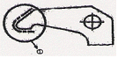
- 연삭 가공 부분
- 열처리 부분
- 다듬질 부분
- 원형 가공 부분
(정답률: 43%)
29. 기하공차에서 이론적으로 정확한 치수를 나타내는 것은?
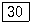
- ②
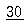
- (30)
(정답률: 83%)
30. 기어의 제도에 대한 설명 중 틀린 것은?
- 이끝원은 굵은 실선으로 그린다.
- 피치원은 가는 2점 쇄선으로 그린다.
- 이뿌리원은 가는 실선으로 그린다.
- 헬리컬기어는 잇줄방향으로 보통 3개의 가는 실선으로 그린다.
(정답률: 73%)
31. 다음은 CAD System의 구성과 그들의 상관관계를 나타낸 것이다. ( )안에 들어갈 것으로 옳은 것은?
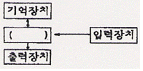
- CPU
- RAM
- Register
- Accumulator
(정답률: 67%)
32. 45° 모따기를 나타내는 기호로 올바른 것은?
- C
- R
- □
- t
(정답률: 87%)
33. 6각너트 스타일1 A M12-8 SM20C - C로 표시된 6각 너트에서 A는 무엇을 의미하는가?
- 볼트 종류
- 부품 등급
- 강도 구분
- 지정사항
(정답률: 57%)
34. 다음 기하공차 중에서 데이텀이 필요없이 단독으로 규제가 가능한 것은?
- 평행도
- 진원도
- 동심도
- 대칭도
(정답률: 57%)
35. 다음 기하공차 중 평행도 공차기호는 어느 것인가?
- //
- ⊥
- ∠
- ―
(정답률: 89%)
36. 관용 평행 나사를 표시하는 기호는?
- R
- G
- PT
- Tr
(정답률: 42%)
37. 작성된 도면을 화면상에서 어떤 변위만큼 움직일 때의 명령은?
- ZOOM
- PAN
- TRIM
- CHPROP
(정답률: 34%)
38. 다음 중 3차원의 기하학적 형상 모델링의 종류가 아닌 것은?
- 와이어 프레임 모델링(wire frame modelling)
- 서피스 모델링(surface modelling)
- 솔리드 모델링(solid modelling)
- 시스템 모델링(system modelling)
(정답률: 74%)
39. 그래픽 스크린 상에서 특정의 위치나 물체를 지정하는데 사용되는 입력장치는?
- 라이트 펜(light pen)
- 마우스(mouse)
- 컨트롤 다이얼(control dial)
- 조이스틱(joy stick)
(정답률: 42%)
40. 다음 도형은 제3각법으로 정면도와 우측면도를 나타낸 것이다. ㉮에 들어갈 평면도로 맞는 것은?
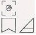
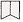
(정답률: 34%)
41. 기계제도에서 치수 기입의 원칙으로 틀린 것은?
- 치수는 되도록 정면도에 집중하여 기입한다.
- 치수는 되도록 중복 기입을 피한다.
- 치수는 되도록 계산하여 구할 필요가 없도록 기입한다.
- 치수는 되도록 치수선이 만나는 곳에 기입한다.
(정답률: 71%)
42. 잇수 18, 피치원 지름 108인 스퍼기어의 모듈은?
- 2
- 4
- 6
- 8
(정답률: 86%)
43. CAD시스템으로 도면을 작성하여 출력하는 출력장치가 아닌 것은?
- 플로터
- 하드 카피어
- 라이트 펜
- 레이저 프린터
(정답률: 79%)
44. CAD 시스템 사용시의 효과라고 할 수 없는 것은?
- 고도의 설계 기능, 기술이 불필요
- 제품의 표준화
- 제품 제도의 데이터베이스 구축용이
- 설계 생산성 증가
(정답률: 65%)
45. 다음 보기의 도면과 같이 40 밑에 그은 선은 무엇을 나타내는가?
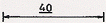
- 기준 치수
- 비례척이 아닌 치수
- 다듬질 치수
- 가공 치수
(정답률: 65%)
46. 코일 스프링의 제도에 대한 설명 중 틀린 것은?
- 스프링은 원칙적으로 하중이 걸린 상태에서 도시한다.
- 스프링의 종류와 모양만을 도시할 때에는 재료의 중심을 굵은 실선으로 그린다.
- 특별한 단서가 없는 한 모두 오른쪽 감기로 도시하고 왼쪽 감기일 경우 “감긴 방향 왼쪽”이라고 표시한다.
- 코일 부분의 중간 부분을 생략할 때에는 생략한 부분을 가는 1점 쇄선 또는 가는 2점 쇄선으로 표시해도 좋다.
(정답률: 69%)
47. 유체의 종류와 기호를 연결한 것으로 틀린 것은?
- 공기 - A
- 가스 - G
- 유류 - O
- 수증기 - W
(정답률: 75%)
48. 다음 그림의 단면도는?
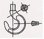
- 부분 단면도
- 한쪽 단면도
- 회전도시 단면도
- 조합 단면도
(정답률: 74%)
49. CAD시스템에서 마지막 점에서 다음 점까지의 각도와 거리를 입력하여 선긋기를 하는 입력방법은?
- 절대좌표 입력방법
- 상대좌표 입력방법
- 원통좌표 입력방법
- 상대 극좌표 입력방법
(정답률: 58%)
50. 스퍼기어의 제도에서 피치원 지름은 어느 선으로 나타내는가?
- 가는 1점 쇄선
- 가는 2점 쇄선
- 가는 실선
- 굵은 실선
(정답률: 75%)
51. SS330로 표시된 기계재료에서 330은 무엇을 나타내는가?
- 최저 인장강도
- 최고 인장강도
- 탄소함유량
- 종류
(정답률: 45%)
52. 다음 나사의 표시 방법에 대한 설명 중 올바르지 않은 것은?
- 수나사와 암나사의 결합 부분은 수나사로 표시한다.
- 수나사나 암나사의 골지름은 가는 실선으로 그린다.
- 수나사의 바깥지름과 암나사의 안지름은 굵은 실선으로 그린다.
- 완전 나사부와 불완전 나사부의 경계선은 가는 실선으로 그린다.
(정답률: 61%)
53. 회전 단면도를 설명한 것으로 가장 올바른 것은?
- 도형 내의 절단한 곳에 겹쳐서 90° 회전시켜 도시한다.
- 물체의 1/4을 절단하여 1/2은 단면, 1/2은 외형을 도시한다.
- 물체의 반을 절단하여 투상면 전체를 단면으로 도시한다.
- 외형도에서 필요한 일부분만 단면으로 도시한다.
(정답률: 64%)
54. V-벨트 풀리는 호칭지름에 따라 홈의 각도를 달리 하는데, 다음 중 V-벨트 풀리의 홈의 각도로 사용되지 않는 것은?
- 34°
- 36°
- 38°
- 40°
(정답률: 62%)
55. 원뿔을 경사지게 자른 경우의 전개 형태로 올바른 것은?
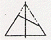
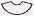
(정답률: 43%)
56. 보기의 그림에서 ㉮부와 ㉯부에 두개의 베어링을 같은 축선에 조립하고자 한다. 이때 ㉮부를 기준으로 ㉯부에 기하공차를 결정할 때 가장 올바른 것은?
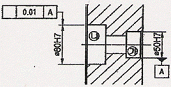
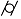
(정답률: 55%)
57. 다음 중에서 3각법의 투시 순서로 옳은 것은?
- 눈 → 투상면 → 물체
- 물체 → 투상면 → 눈
- 물체 → 눈 → 투상면
- 눈 → 물체 → 투상면
(정답률: 72%)
58. 표면거칠기를 나타내는 방법 중 단면곡선에서 기준길이를 잡고 가장 높은 곳과 낮은 곳의 차이를 측정하여 미크론(㎛) 단위로 나타내는 것을 무엇이라고 하는가?
- 최대높이
- 10점 평균거칠기
- 중심선 평균거칠기
- 단면 평균거칠기
(정답률: 36%)
59. 다음 그림의 테이퍼 부분의 테이퍼 값은 얼마인가?
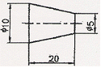
- 0.25
- 2
- 4
- 8
(정답률: 43%)
60. 다음 도형은 제3각법으로 정면도와 우측면도를 나타낸 것이다. 평면도로 옭은 것은?
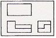
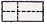
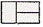
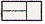
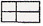
(정답률: 75%)